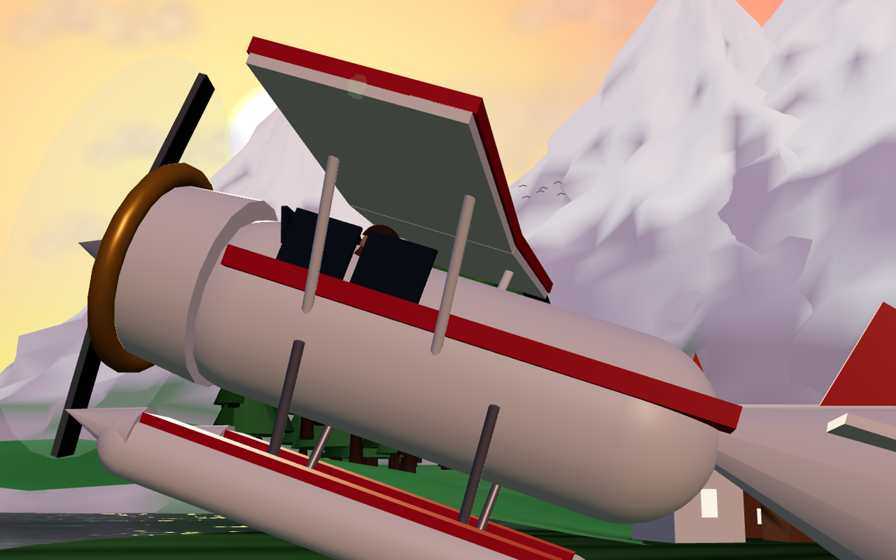
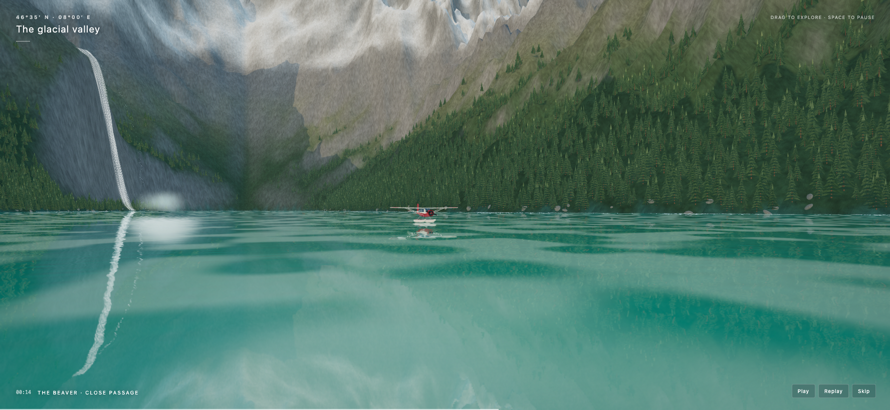

SB—23 · Improvement archive
Improvement,
with receipts.
Fjord Seaplane · 峡湾水上飞机
Verified iteration
Starting point
The earliest retained Fjord scene is a single-file Three.js seaplane study with mountains, forest, village, waterfalls and a 22-second flight path. It already contains first-pass water and exposure work, so the original one-shot is not claimed.
Evidence standard: Source snapshots, technical logs and/or measurable checks


The final archive capture documents the implementation switch and the cleaner, more open composition.
Refinement sequence
What changed
8 documented implementation or specification improvements.
- 01
Water and exposure
A fourth high-frequency ripple layer, sky reflection and glints were added. Exposure increased from 1.28 to 1.35 and hemisphere light from 0.95 to 1.05, with brighter distant haze.
- 02
Terrain and reflected color
Turquoise water, mountain-streak reflections, dual glints and wave shadows were paired with ice fissures, stronger displacement, green slopes and clearer cliff contrast.
- 03
Float contact and camera arc
Aircraft waypoints rose four meters to correct submerged floats. The camera was reorganized into aerial establishment, water-level approach, close flyby and panoramic pull-back.
- 04
Reflections and secondary motion
Planar reflection, wind patches, waterfall-foot rings, foam and subtle camera sway connected the terrain, aircraft and water.
- 05
Composition and scale
The middle shot moved from roughly 24m to 40–46m, then pulled back about 1.35× with a higher angle. Aircraft scale changed from 1.3 to 1.05 to reduce clipping and preserve the mountain frame.
- 06
Wake physics and frame-step bug
A V-wake, takeoff burst, expanding foam and denser spray were added. Frame capture changed from tick(0) to a fixed 1/30 step so particle lifetimes actually advanced.
- 07
Two-stage clipping repair
Cliff-edge vertices first received height variation; the problematic independent cliff pieces were then removed. Waterfalls now follow the same mountain displacement and trees use the makePeak height function while avoiding waterfall channels.
- 08
Final implementation and edit rhythm
The final entry switched to a separate 25-second alpine-lake implementation. Its edit compresses the first 15 seconds to 3, expands the remaining 10 to 16, and holds the final frame for 3 seconds.
Evidence boundary
The original one-shot and every intermediate source snapshot were not retained. Most sequence details come from the technical process log. The final alpine-lake entry is a different implementation and must not be credited with every earlier scene modification.